富源人富源事儿
富源县，隶属于曲靖市，位于云南省东部，曲靖市东部，地处东经103°58′~104°49′，北纬25°~25°58′之间，东邻贵州盘州、西接麒麟区、沾益区，南抵罗平县、贵州兴义市，北连宣威市，面积为3251平方公里，属高原多山地区。
富源县地处云南高原东部，地势西北高、东南低，地形为山地、峡谷，乌蒙山支脉自北向南纵贯全境，属亚热带季风气候，境内降水丰富，四季温和，年平均气温14℃左右，境内河流属珠江流域。
2017年末，富源县户籍总人口为83.38万人，少数民族人口8.34万人，辖9镇1乡2街道。2017年，富源县实现生产总值150.7亿元，农村居民人均可支配收入1.14万元，城镇居民人均可支配收入3.2242万元。2019年4月，云南省人民政府决定富源县退出贫困县序列。
| 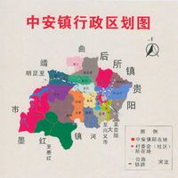
中安镇
|
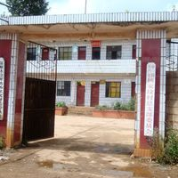
后所镇
|
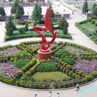
墨红镇
|
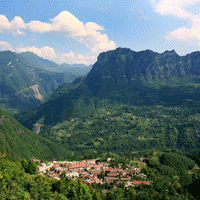
大河镇
|
|---|---|---|---|
|
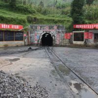
营上镇
|
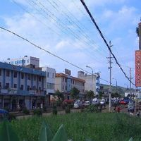
竹园镇
|
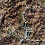
富村镇
|
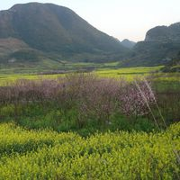
黄泥河镇
|
|
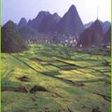
古敢水族乡
|
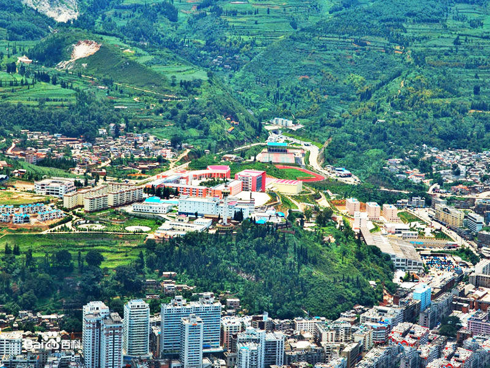
老厂镇
|
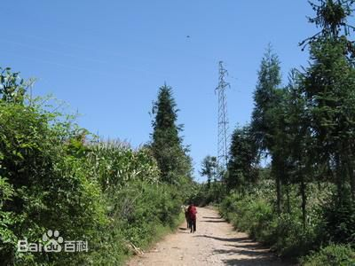
十八连山乡
|
周秦时，属滇国、夜郎。
两汉时，属益州宛温县。
两晋南北朝时，属宁州。
隋朝，属益州开边县。
唐朝，属盘州。
南诏和大理国时，为摩弥部。
元朝时，在境内北部设罗山县，属曲靖宣抚司；南部设亦佐县，属罗雄州，境内置官设治。
明洪武二十三年（1390年），废罗山县，新置平彝县卫，南部仍为亦佐县。
清初，平彝县卫属云南都司、亦佐县属曲靖军民府。清顺治十四年（1657年），废亦佐县为平夷县。康熙三十四年（1695年），以平彝废卫、亦佐废县，建平彝县，属曲靖军民府。
1954年，改称富源县至今。
2001年7月18日，省政府批准同意后所乡、竹园乡撤乡设镇；8月25日，省政府批准批准同意雨汪乡更名为十八连山乡。
2002年4月29日，省政府批准同意大河乡撤乡设镇；9月8日，省政府批准同意墨红乡、富村乡撤乡设镇。
2013年10月20日，省政府批准同意撤销中安镇。富源县撤销中安镇，设立中安街道、胜境街道。
2014年3月3日，省政府批准同意将后所镇洗洋塘村调整归胜境街道管辖。
区划详情
2017年，富源县辖中安街道、胜境街道、后所镇、墨红镇、大河镇、营上镇、竹园镇、富村镇、十八连山镇、老厂镇、黄泥河镇和古敢水族乡9镇1乡2街道，161个村、居（社区）民委员会（其中18个社区，143个村委会），1782个自然村，政府驻中安街道。
富源县位于云南省东部，曲靖市东部，地处东经103°58′~104°49′，北纬25°~25°58′之间。东邻贵州盘州、西接麒麟区、沾益区，南抵罗平县、贵州兴义市，北连宣威市。面积为3251平方公里。
地形地貌
富源县地处云南高原东部，地势西北高、东南低，地形为山地、峡谷，乌蒙山支脉自北向南纵贯全境。主要山峰有老黑山、东山梁子、十八连山、黑牛山。最高峰营盘山位于墨红镇，海拔2748.9米，最低点特土木浪河大海沟位于古敢水族乡，海拔1100米。
气候
富源县属亚热带季风气候。其特点是冬无严寒，夏无酷热，春秋气候干燥温和，夏季降水丰沛，年日照充足。多年平均气温14.3℃。1月平均气温6.3℃，极端最低气温-11.0℃（1983年12月29日）；7月平均气温19.4℃，极端最高气温34.9℃（1963年5月31日）。最低月均气温1.5℃（1968年1月）；最高月均气温21.8℃（1963年5月）；平均气温年较差13.5℃。生长期年平均170天，无霜期年平均264天，最长329天，最短189天。年平均日照时数1491.8小时，年平均降水量1064.6毫米，年平均降雨日数142.4天，最多191天（1964年），最少124天（2009年），极端年最大雨量1565.2毫米（1964年），极端年最少雨量634.5毫米（2011年）。降雨集中在每年5月至10月，7月最多。 [1]
水文
富源县境内河流属珠江流域，流域面积3251平方公里。主要河道有二级河块泽河、黄泥河、嘉河、丕德河、水城河、篆长河、木浪河等6条，总长342.1公里；三级河流有洞上、东门、西门、恩乐、白马、迤佐、补木、民家、海章、托田、补掌、古木、红岩脚、扎外、舍马、顺场、岔河、朝阳箐、社安、鲁木克、田冲、舍打沟、普冲等44条，总长427.3公里，年径流量22.1亿立方米。
富源县境内最大的河流为块泽河，发源于中安镇支锅石村，从西北向东南流经中安、大河、营上、竹园、富村、老厂、十八连山等镇，长163.7公里，流域面积1338平方公里，年均流量26.29立方米/秒。主要支流有洞上、东门、西门、恩乐、白马、迤佐、补木、民家、海章、托田、补掌、古木、红岩脚、扎外等31条。
富源县境内已探明地下矿藏有煤、煤层气、硫铁矿、铅锌、金矿、铜矿、石灰岩矿等21个矿种，其中煤地质储量160亿吨，已探明储量78亿吨，已开发的有143矿井，主要分布在老厂、十八连山、竹园、营上、大河、墨红、后所等镇，矿区面积1360平方公里，年产量2000万吨；石灰岩矿364亿吨，铜、铅、锌、银矿62.33万吨，金矿38万吨，铁矿684.76万吨。
水资源
富源县水能资源8.89万千瓦时，可开发5.22万千瓦时；地下水资源总量约4.82亿立方米。
生物资源
富源县有植物45科106种，药材300余种；野生动物有狐狸、野狗、麂子、岩羊、穿山甲、白脸獐、山兔、野鸡、青猴、斑鸠等20余种。
截至2017年末，富源县户籍总人口为83.38万人，其中城镇人口20.01万人，乡村人口63.37万人，男性43.77万人，女性39.61万人，少数民族人口8.34万人，少数民族人口占全县总人口的10%，有彝族、水族、回族、布依族、苗族等少数民族。